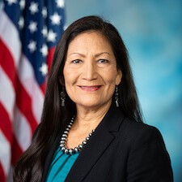

Debra Haaland
She is the first Native American secretary. She speaks about the crisis many Indigenous womans face. She created a unit to investigate the missing and murdered Indigenous womans. This has been a problem for so many years. Haaland is the first to make a change and take action.
Pocohantas

Her real name was Amonute but she was known as Matoaka, which means “flower between two streams.” She was born between the two rivers of Mattaponi and Pamunkey, where she got her name. Matoaka was one of the first MMIWG in the late 1600s. The story of Matoaka (pocohantas) is a tragic tale of the young Native girl who was kidnapped, sexually assaulted, and allegedly murdered by those who were supposed to keep her safe.
Rosalie Fish
Rosalie Fish is a young Native American runner. She runs for MMIW. She was also a victim of sexual assault. As many Native American kids face dicrimination in schools off the reservations, Rosalie did as well. She uses her voice and her great ability to run for all the womans that didnt get the justice they deserved. She is one of many womans to use her platform for MMIW.